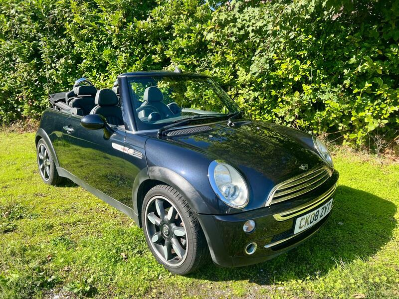
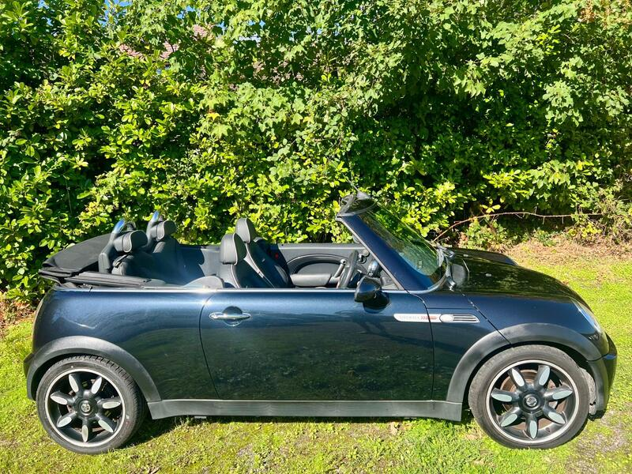
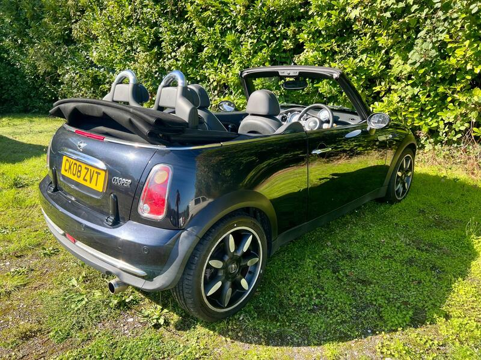
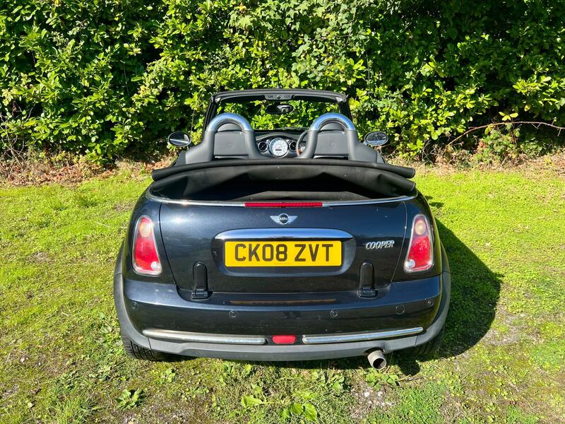

Seller photos from the AutoTrader ad.
MINI Convertible 1.6 Cooper Sidewalk
A rare Sidewalk with a new clutch, a new MOT and a thick invoice file.
Key facts
| Price | £2,250 |
|---|---|
| Year | 2008 |
| Miles | 110,025 |
| Model | MINI Convertible 1.6 Cooper Sidewalk |
| Colour | Black |
| Registration | 2008 (08 reg) |
| Owners | 2 owners |
| Service history | Not stated |
| MOT (AutoTrader ad) | 9 Sep 2027 (ad) |
| Seller | Trade |
| Location | Battle |
| From GU7 | 52 mi (AutoTrader) |
| Listed on AutoTrader | 14/10/2026 |
| Checked | 15 October 2026 |
Why buy it
- Sidewalk special edition with leather (ad)
- Full service history, new MOT, wallet of invoices including new clutch and brakes (ad)
- 2 remote keys and the full handbook pack (ad)
Things to check
110k miles on a pre-2011 engine: listen for timing-chain noise
The ad says 1 previous owner, AutoTrader says 2: check the V5C
Check the electric roof and its drains
- MINI Convertible R52/R57 weak spots
Not flagged as a major issue in our sources; check for water ingress via roof drains and seals. R52 CVT auto fails (avoid); supercharged R52 power-steering pump; pre-Nov 2011 Prince timing-chain tensioners; roof hydraulics £395–495 average repair, R57 roof from ~£1,735.
Seller says (extract)
“Brilliant, fun and rare Mini special edition in great condition. Full service history, new mot, leather upholstery, electric roof, remote central locking and lots more. Drives brilliantly well and everything works as it should, full handbook pack, wallet of invoices ( which includes new clutch, brakes etc) and 2 remote keys. 1 previous owner.…”